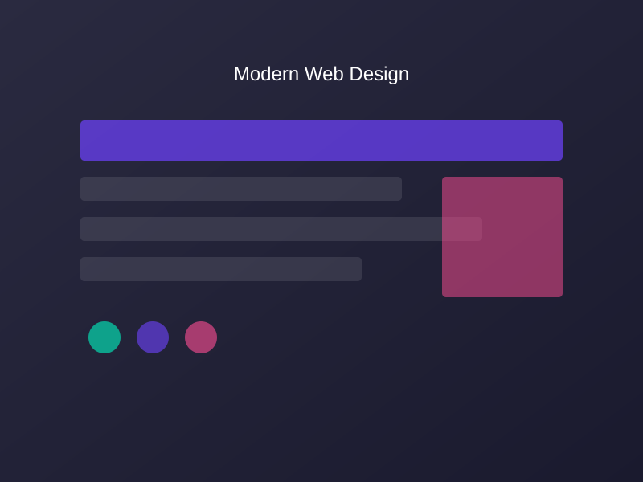
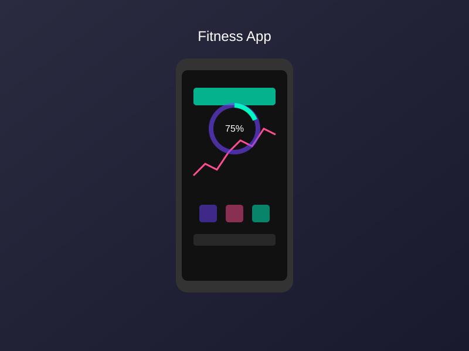

Benutzeroberflächen, die begeistern

Wir entwerfen intuitive und ansprechende Benutzeroberflächen, die Ihre Nutzer begeistern werden. Unser UI/UX-Design-Prozess ist darauf ausgerichtet, Benutzererfahrungen zu schaffen, die nicht nur ästhetisch ansprechend sind, sondern auch funktional und benutzerfreundlich.
Von der ersten Konzeption bis zur finalen Umsetzung arbeiten wir eng mit Ihnen zusammen, um sicherzustellen, dass Ihre Vision in ein herausragendes digitales Erlebnis umgesetzt wird.
Erleben Sie unseren UI/UX-Design-Prozess interaktiv. Klicken Sie auf die einzelnen Schritte, um mehr zu erfahren.
Verstehen der Anforderungen
Struktur und Layout
Visuelle Gestaltung
Interaktive Modelle
In dieser Phase führen wir umfassende Nutzerrecherchen durch, analysieren Ihre Zielgruppe und definieren klare Ziele für das Projekt. Wir erstellen Personas und User Journeys, um ein tiefes Verständnis für die Bedürfnisse und Erwartungen Ihrer Nutzer zu entwickeln.
Unsere Recherche umfasst:
Basierend auf unseren Rechercheergebnissen erstellen wir Wireframes, die die Struktur und den Informationsfluss Ihrer Anwendung oder Website darstellen. Diese Wireframes dienen als Grundlage für das visuelle Design und helfen dabei, die Benutzerführung zu optimieren.
In dieser Phase definieren wir:
Jetzt bringen wir Farbe und Leben in die Wireframes. Wir entwickeln ein visuelles Design, das Ihre Markenidentität widerspiegelt und gleichzeitig moderne Design-Prinzipien berücksichtigt. Unser Ziel ist es, ein ästhetisch ansprechendes und konsistentes Erscheinungsbild zu schaffen.
Unser Design-Prozess umfasst:
Mit interaktiven Prototypen können Sie die Benutzeroberfläche erleben, bevor sie entwickelt wird. Diese Prototypen ermöglichen es uns, das Design zu testen, Feedback zu sammeln und Anpassungen vorzunehmen, um die bestmögliche Benutzererfahrung zu gewährleisten.
Vorteile unserer Prototypen:
Erleben Sie einen interaktiven Prototyp einer mobilen App. Klicken Sie auf die markierten Bereiche, um mehr zu erfahren.

Let's work together to create a user-friendly and visually impressive experience for your users.
Contact Us